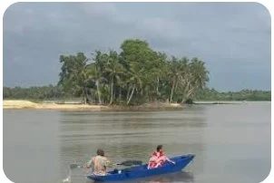
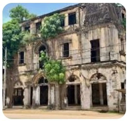
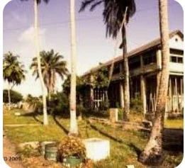
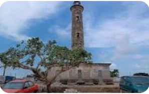
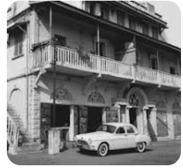
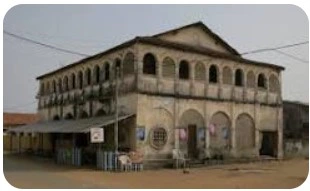
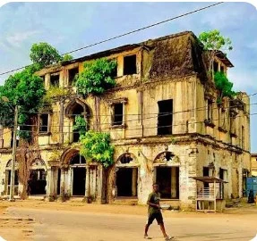
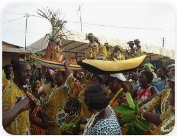
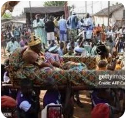
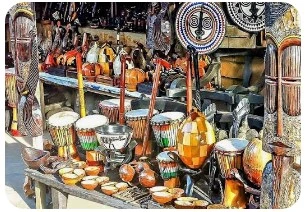

Grand-Bassam Beach
Enjoy the coastal scenery and the relaxing atmosphere along the Atlantic Ocean. The beach is a popular place to experience the natural beauty of the town.
Explore the history, architecture, culture, and natural beauty of Grand-Bassam, one of Côte d'Ivoire's most significant historic coastal towns.
Grand-Bassam is known for its historic colonial quarter, traditional communities, cultural heritage, and Atlantic coastline. Its architecture and cultural traditions provide a glimpse into the history and identity of Côte d'Ivoire.
Whether you enjoy exploring historic buildings, learning about local traditions, discovering traditional crafts, or relaxing by the sea, Grand-Bassam offers a variety of attractions to explore.

Enjoy the coastal scenery and the relaxing atmosphere along the Atlantic Ocean. The beach is a popular place to experience the natural beauty of the town.

Discover the lagoon landscape and its importance to the local environment, livelihoods, and coastal communities.
Grand-Bassam's historic district preserves architectural features associated with its development as an important coastal settlement. Its historic buildings provide insight into the town's urban and cultural history.

Observe the distinctive facades, balconies, windows, and other architectural details that characterize historic buildings.

Explore the historic quarter and learn about the buildings and streets that contribute to Grand-Bassam's heritage.

Discover a notable historic landmark associated with the administration and development of Grand-Bassam.

Learn about the lighthouse and the relationship between the town's history and its coastal setting.

Appreciate the historic architecture and the role historic residences play in preserving the town's character.

Discover another example of the historic architecture that makes Grand-Bassam an important heritage destination.

See how historic commercial architecture reflects the town's former role as a center of coastal trade and activity.
Grand-Bassam's heritage also lives in its communities, artistic traditions, festivals, and cultural practices. These traditions continue to contribute to the town's identity.

Learn about local celebrations and cultural events that bring communities together through music, dance, and shared traditions.

Discover the traditions and community heritage of the Nzima people, whose cultural identity is closely connected to Grand-Bassam.

Explore traditional creativity through locally produced art, handcrafted objects, and artistic expressions that reflect cultural heritage.
The Historic Town of Grand-Bassam is recognized as a UNESCO World Heritage Site. Its historic urban layout, architecture, and cultural significance help preserve an important part of Côte d'Ivoire's history.
Visitors can learn more about its international heritage recognition through the UNESCO World Heritage Centre .
Make the most of your visit by exploring the historic quarter, learning about local traditions, and enjoying the coastal environment.